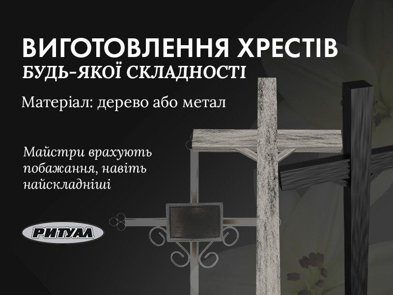

Замовити хрест на могилу будь-якої складності можна в нашому похоронному бюро “Ритуал”. Ми турботливо
ставимося до власної роботи, тому ви можете обрати хрест за існуючими моделями чи замовити індивідуальне
виготовлення. Наші майстри врахують всі ваші побажання та виготовлять конструкції навіть з найскладнішими
елементами. Також при замовленні хреста варто одразу вказати матеріал виготовлення – деревина чи метал. Від
цього та від складності виробу буде залежати кінцева вартість.